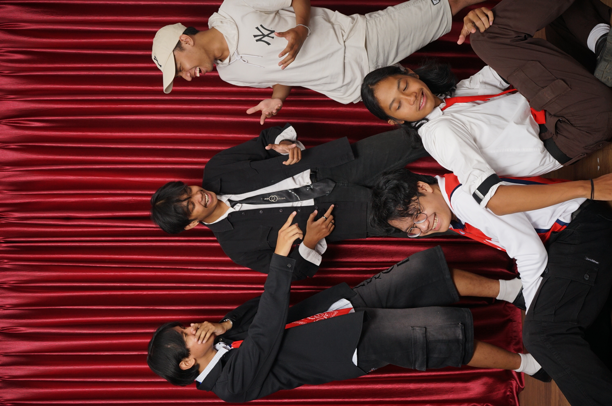

HIGH MFS TV
★ BIRTHDAY BROADCAST ★
Bintang
Hari Ini!
Hari Ini!
● STANDBY
REMOTE CONTROL
Pilih beberapa video sekaligus. Video diputar dari perangkatmu dan tersedia selama halaman ini terbuka.
Kartu pos dari HIGH MFS

GREETINGS FROM HIGH MFS
Balik kartu pos
Lihat sisi depan
Untuk Bintang Hari Ini,
Selamat ulang tahun! Makasih udah jadi bagian dari semua cerita, obrolan random, dan momen yang bikin kita ketawa lagi tiap diinget.
Semoga tahun ini banyak alasan baru buat senyum. Kalau kangen, nyalain TV-nya lagi.
Dari kami, HIGH MFS